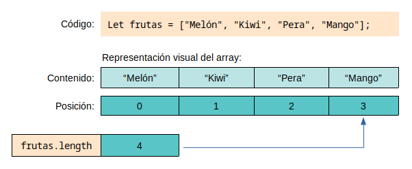

4b -Arrays
Los arrays son la estructura de datos más simple y más usada en cualquier lenguaje de programación. Básicamente podemos entenderlos como una colección de datos que permite un acceso directo a los elementos que contiene. Estos elementos se encuentran ordenados por el orden en el que fueron insertados en el array.
Introducción
Declarar un array:
let arrNombreDelArray = []; // array vacío let frutas = ["Melón", "Kiwi", "Pera", "Mango"]; // array con elementos

Acceder a los elementos del array:
frutas[2] = "Uvas"; //Cambiamos el tercer elemento console.log( fruits[2] );
Añadir y quitar elementos:
frutas.push("Sandía"); //añade por el final
frutas[frutas.length] = "Melocotón"; //añade por el final
fruits.unshift("Kiwi"); //añade por el principio
let ultimaFruta = frutas.pop();
let primeraFruta = frutas.shift()
Ampliación: ¿Por qué es más costoso añadir elementos por el principio que por el final?
Crear un array con varios elementos
let arr5Elementos = [,,,,,]; //5 elementos vacíos (sintaxis no recomendada) let arr34Elementos = new Array(34); //34 elementos vacíos (mejor sintaxis, pero es mejor evitar los huecos) let arr7Elementos = new Array(7).fill(7); //7 elementos que son todos 7 console.table(arr7Elementos);
La propiedad length
La propiedad length indica el número de elementos de un array.
Sin embargo, tiene varios aspectos importantes, para empezar es editable, por lo que se puede usar para eliminar elementos del array.
const numeros = [1, 2, 3, 4, 5]; numeros.length = 3;
Igualmente también se puede usar para añadir elementos vacíos al array.
const numeros = [1, 2, 3, 4, 5]; numeros.length = 7; console.table(numeros); //[1,2,3,4,5,,]
Importante: ver más adelante cómo se gestionan los huecos en los recorridos.
Recorridos
Bucle for, while y similares
Recorridos clásicos, sencillos de entender, universalmente conocidos y probados, normalmente más eficientes:
let a = [9, 9, 9, 8, 8, 8, 7, 7, 7, 6, 6, 6];
for (let i=0; i<a.length; i++){
console.log( a[i] );
}
Bucle for..of
No permite modificar el array si sus tipos son primitivos (sí podremos modificarlos si sus tipos se pasan por referencia).
for (let e of a){
console.log(e)
}
Bucle con map: (muy usado en React y Astro)
Devuelve un nuevo array resultado de aplicar la función a cada elemento del array (no modifica el array original).
Por ejemplo esto devuelve un array con los cuadrados de cada número:
let cuadrados = a.map( e=>e*e)
Bucle forEach
Recorre el array aplicando la función a cada elemento. En su forma más sencilla se recorre el array elemento a elemento y no devuelve nada.
//recorrido básico (llamo e al parámetro por "elemento" a.forEach( e => console.log(e) ); // No se puede modificar el array así porque los tipos de sus elementos son primitivos // y se pasan a la función por valor let k=[1,2,3]; k.forEach(e=>e=5); // intentamos modificar sus valores sin éxito console.log( k[0], k[1], k[2] ); // 1 2 3 // Sí podremos modificar los valores porque los tipos de sus elementos no son primitivos // y se pasan a la función por referencia l=[ [1,1], [2,2] ]; // cada elemento es un array de números l.forEach(e=>e[0]=5); // cambiamos el primer valor de cada array console.log( l[0][0], l[1][0] ); // 5 5
La forma completa del forEach sí permite modificar el array aunque sus tipos sean primitivos:
let arr=["uno", "dos", "tres", "cuatro", "cinco"] arr.forEach( (e,i,a)=>a[i] = 29 ); console.log( arr[0], arr[1], arr[2]); //29 29 29
Otro ejemplo: muestra la suma de cada elemento con el siguiente
// Muestra la suma del 1er elem con el 2º, luego el 2º con el 3º, etc...
// El último elemento no se suma con el siguiente (porque no existe)
// El ejemplo de abajo imprimirá 3 (1+2), 7(2+5), 14(5+9), 9
[1,2,5,9].forEach( (elemento, indice, array) => {
if(indice<array.length-1)
console.log(elemento + array[indice+1]);
else
console.log(elemento);
});
Eliminar elementos y huecos en el array
Imagina que tenemos este array al que eliminamos un elemento dejando un hueco vacío.
let a =['a','b','c','d']; delete a[1]; // elimina el elemento dejando el hueco console.table(a); // ["a",,"c","d"] console.log(a.length); // 4
Estos huecos vacíos no son undefined, aunque en algunos métodos se comportarán como si lo fueran. Principalmente en los bucles clásicos, el operador spread (...) y el map() si se usan para copiar los elementos del array en otro array. También funcionan así el join, fill, find, includes,...
Los trozos de código de abajo imprimirán básicamente lo mismo
// "a" undefined "c" "d"
for(let i=0;i<a.length;i++){
console.log(a[i]);
}
for(let e of a){
console.log(e);
}
console.table(a.map( e=>e))
console.table( [...a] );
Sin embargo el forEach y la mayoría de métodos funcionales del array (filter, reduce, some...) obviarán los elementos vacíos.
a.forEach(e=>{
console.log(e)
})
console.table(a.filter( e=>e!='c'))
console.table([3,5,,7].map( e=>e)) //[6,10,,14]
Para eliminar un elemento sin dejar huecos se puede usar el método splice que aparece abajo.
Métodos de un array
Algunos básicos:
- a.join(",") → devuelve una cadena con los elementos separados por una , (es lo opuesto del split() en una cadena)
- a.reverse() → reordena el array en orden inverso modificándolo. Para no mutar el array usa toReversed()
- a.at() → funciona como el del string, permite valores negativos
- a.concat(["a","b"],[5]) → concatena dos o más arrays en uno solo
Métodos más circunstanciales
- a = Array.from( document.querySelectorAll("im") ) → convierte un objeto iterable a un array.
- a.fill(5) → rellena todas las posiciones del array con el número 5
- a = [0, 1, [2, [3, [4, 5]]]].flat() → a contiene ahora [0,1,2,3,4,5]
Búsqueda de un elemento
Algunos devuelven la posición y otros devuelven el elemento.
- a.includes('gato') → devuelve un booleano que indica si 'gato' es un elemento del array.
- a.indexOf('Zorro') → la posición del elemento o -1 si no se encuentra. También existe a.lastIndexOf('Zorro')
- findIndex( e=>e>20 ) y findLastIndex(e=>e>20) → Devuelve el índice del primer (o último) elemento que cumpla la condición de la función o -1 si no existe.
- find(e=>e>10) y findLast(e=>e>10) → devuelve el primer elemento (o el último) que cumple la condición de la función o undefined si no existe.
some y every
a.some( e=>e>10)
Devuelve true si algún elemento del array cumple la condición de la función. En caso contrario devuelve false.
a.every( e=>e>10)
Devuelve true si todos los elementos del array cumple la condición de la función. En caso contrario devuelve false.
Importante: en un array vacío, every() siempre devuelve true.
https://humanwhocodes.com/blog/2023/09/javascript-wtf-why-does-every-return-true-for-empty-array/
sort y toSorted
Por defecto hace una ordenación de los elementos del array por orden alfabético. Si necesitamos otra ordenación hay que indicarla con una función.
Por ejemplo para la ordenación numérica:
a.sort( (a,b)=>a-b)
Es un método que modifica el array. Para que no lo haga y devuelva otro array se usará toSorted().
Para comparar cadenas se deberá usar el localeCompare():
a=[ "gato", "zorro", "perro", "lana", "águeda", "ahora", "àsterix" ]; a.toSorted(): // [ "ahora", "gato", "lana", "perro", "zorro", "àsterix", "águeda" ] a.toSorted( (a,b)=>a.localeCompare(b,"es") ) // [ "águeda", "ahora", "àsterix", "gato", "lana", "perro", "zorro" ]
slice (rebanada, tajada)
Ideas importantes:
- Devuelve una copia de una parte del array.
- Empezando por inicio hasta fin (fin no incluido).
- El array original no se modificará.
- sólo recuperará elementos que estén en posiciones contiguas.
Sintaxis: arr.slice([inicio [, fin]])
Ejemplo:
let arrNombres=["Ana", "Belén", "Carlos", "Diego", "Esperanza", "Felipe"]; let arrAlgunosNombres = arrNombres.slice( 1, 4); console.table(arrAlgunosNombres); //contiene Belén, Carlos y Diego.
Nota: sin parámetros devuelve una copia del array. Si inicio es un número negativo se empezará a contar desde el final del array,
Nota: si fin se omite se supone que es el final del array. Además se puede usar un número negativo: slice(2,-1) extrae desde el tercer hasta el penúltimo elemento en la secuencia.
splice y toSpliced (empalme, unión de trozos)
Cambia varios elementos del array, eliminando algunos elementos y añadiendo nuevos (en la posición que ocupaba el primer elemento eliminado).
Sintaxis:
array.splice(start[, deleteCount[, newItem1[, newItem2[, ...]]]])
Ejemplo:
let arrNombres=["Ana", "Belén", "Carlos", "Diego", "Esperanza", "Felipe"]; arrNombres.splice(2,2,"Hola", "Caracola");
Resultado:
arrNombres contiene ahora [ "Ana", "Belén", "Hola", "Caracola", "Esperanza", "Felipe" ]
Otro ejemplo, si sólo se incluye un valor, se entiende que es el número de elementos a eleminar desde el principio:
let a=[1,2,3,4,5]; a.splice(2); // elimina y devuelve el array [3, 4, 5] (del elemento con la pos. 2 en adelante) console.log( ...a); // En el array a queda: [1, 2] a=[1,2,3,4,5]; a.splice(2,1); // devuelve y elimina el elemento en la posición 2 console.log( ...a); // En el array a queda: [1, 2, 4, 5]
Importante: splice() modifica el array, toSpliced() no.
El método splice() devuelve un array con los elementos eliminados, pero toSpliced() devuelve el array resultante.
Más métodos de programación funcional
Algunos métodos que aún no han aparecido.
filter
Devuelve un nuevo array con los elementos que cumplan la condición.
[1,2,3,4,5,7].filter( n=>n<5 );
reduce
Ejecuta una función en cada elemento del array y devuelve el resultado al final. Se entiende mejor con algún ejemplo (el valor inicial es opcional):
let valorInicial = 100; const sumaConValorInicial = [2,3,4,5].reduce( (acumulador, valorActual) => acumulador + valorActual, valorInicial);
La función tiene estos parámetros: (acumulador, valorActual, índiceActual).
Crear una copia de un array (operador spread ...)
let a = [1,2,3,4,5]; const b = [...a]; //copia del array const c = [...a, 4, 5, 6]; //copia del array con nuevos elementos a = [ "Pikachu", ...a , "Raichu", "Charizard"]; //añadimos elementos por delante y por detrás a[a.length]= "Snorlax"; //se añade un elemento directmanete por el final
Array.with()
https://developer.mozilla.org/en-US/docs/Web/JavaScript/Reference/Global_Objects/Array/with
Math.sumPrecise()
Permite sumar los elementos un array sin perder precisión por números flotantes.
Math.sumPrecise( [2,3,4,5,7,45] ); // 66
https://developer.mozilla.org/en-US/docs/Web/JavaScript/Reference/Global_Objects/Math/sumPrecise
Ejercicios Array
Ejercicio 4b-1: Ejecuta esto e intenta averiguar por qué ocurre
Array(16).join("Wat" + 1)
"Wat1Wat1Wat1Wat1Wat1Wat1Wat1Wat1Wat1Wat1Wat1Wat1Wat1Wat1Wat1"
Array(16).join("Wat" - 1) + " Batman!"
"NaNNaNNaNNaNNaNNaNNaNNaNNaNNaNNaNNaNNaNNaNNaN Batman!
Ejercicio 4b-2: Crea una función que compare dos arrays y diga si son iguales.
Nota: por simplificar supondremos que los arrays no contienen objetos ni otros arrays, sólo valores literales (booleanos, números, cadenas de caracteres, null...).
Ejercicio 4b-3: Camelizar una cadena de caracteres. Crea una función que reciba una cadena de caracteres con palabras separadas por guiones y la devuelva el estilo camelCase. Ejemplo:
En-un-lugar-de-la-Mancha --> enUnLugarDeLaMancha
Ejercicion 4b-3b (usando el método map): Dado un array de nombres escritos mezclando mayúsculas y minúsculas, usa la función map() para que se devuelva un array con todos los nombres en minúsculas salvo la primera letra. Por simplificar no habrá nombres compuestos.
let a=["joRge","ana","PEDRO", "jUAn"]
Ampliación: ¿Y si hubiera nombres compuestos? Piénsalo antes de pulsar el botón. Por ejemplo partimos de este array: let a=["joRge juAN","ana","PEDRO joSé", "jUAn PeDRo"];
Ejercicio 4b-4: Crea una función que reciba una palabra y devuelva un array que contenga sólo las vocales en la palabra.
Ejercicio 4b-5: Crear un programa con un array con una serie de marcas de coches ("Mazda", "Peugeot", "Renault", "Nissan", "Kia"). Añadir una función que reciba el array como parámetro y haga lo siguiente:
- Añada un nuevo elemento en la posición 2 llamado "Seat".
- Modifique el tercer elemento para que sea "Mitsubishi".
- Filtra los elementos del array de manera que sólo contenga las marcas de coche cuyo nombre contenga más de 4 letras.
- Detrás de cada elemento del array añade un nuevo elemento que indique el número de letras de la marca.
- Devuelve el array modificado.
Nota: El array modificado debería ser este [ "Mazda", 5, "Peugeot", 7, "Mitsubishi", 10, "Nissan", 6]
Posible solución al ejercicio. Piénsalo antes de pulsar el botón.
Ejercicio 4b-6: Crea una web con una división con id="divResultado", un textbox y tres botones: Añadir, Mostrar y Eliminar.
Al ejecutarse el código se creará automáticamente un array vacío llamado arrNombres.
El usuario introducirá en el textbox un nombre que se añadirá al array al pulsar el botón Añadir.
Al pulsar el botón eliminar se eliminará la primera aparición del nombre que esté en el textbox.
Al pulsar el botón Mostrar ocurrirá lo siguiente:
- Se borrará el contenido de la división HTML.
- Se ordenará el array alfabéticamente
- Se mostrará en la división con id="divResultado" el contenido del array en una lista ordenada.
Comprobaciones:
- Si el array está vacío, el botón Eliminar no hará nada.
- Si el array está vacío, el botón Mostrar indicará en la división que no hay nada que mostrar.
- Se comprobará que hay algo escrito en el textbox cuando se pulsen los botones Añadir y Eliminar (en caso contrario, se mostrará un mensaje de error).
Ejercicio 4b-7: Generador de nombres falsos
Crea una web que contenga dos textboxes y dos botones como aparece en la imagen de abajo. Añade también una división resultado y otra división de errores.
Cuando se pulse el botón Añadir ocurrirá lo siguiente:
- Borrará el contenido de la división de errores.
- Se comprobará que al menos un textbox está rellenos, si no están rellenos ninguno mostrará un mensaje de error en la división de errores.
- Si hay un nombre escrito en el textbox de los nombres, lo añadirá a un array de nombres.
- Si hay un apellido escrito en el textbox de los apellidos, lo añadirá a un array de apellidos.
Cuando se pulse el botón Generar ocurrirá lo siguiente:
- Si no hay ningún nombre aún en el array de nombres o no hay ningún apellido en el array de apellidos, se mostrará un mensaje de error en la división de errores y no se hará nada más.
- Si hay al menos un nombre y un apellido en los arrays, se calcularán dos números aleatorios: uno para el nombre (numNombre) y otro para el apellido (numApellido).
- El número del nombre (numNombre) estará comprendido entre el 0 y la longitud del array de nombres (por ejemplo, si tenemos 4 nombres en el array, el número aleatorio podrá ser 0, 1, 2 o 3).
- Del mismo modo, el número del apellido (numApellido) estará comprendido entre 0 y la longitud del array de apellidos.
- Se recuperará el nombre que esté en el array de nombres en la posición numNombre y el apellido que estará en el array de apellidos en la posición numApellidos.
- Finalmente, se generará un nombre al azar uniendo el nombre y el apellido elegido y añadiéndolo a la división resultado.
Ejercicio 4b-8: En un banco se procesan datos de las cuentas corrientes de sus clientes. De cada cuenta corriente se conoce: número de cuenta, nombre del cliente y saldo actual. El ingreso de datos debe finalizar al ingresar un valor negativo en el número de cuenta. Se pide confeccionar un programa que lea los datos de las cuentas corrientes e informe:
- De cada cuenta: número de cuenta, nombre del cliente y estado de la cuenta según su saldo, sabiendo que:
- Estado de la cuenta:
- 'Acreedor' si el saldo es >0.
- 'Deudor' si el saldo es <0.
- 'Nulo' si el saldo es =0.
- La suma total de los saldos acreedores.
- Estado de la cuenta:
Nota: cada cuenta se puede modelar como un array y, por tanto, la lista de cuentas puede ser un array de arrays.
Ejercicio 4b-9: Crea una web que tome una serie de palabras ingresadas por el usuario y almacene esas palabras en un array. Cada vez que se añada una nueva palabra se mostrará:
- La primera palabra ingresada por el usuario
- La última palabra ingresada por el usuario
- El número de palabras presentes en el array
- Todas las palabras ordenadas alfabéticamente.
Ejercicio 4b-10: Escribe una función que reciba como entrada un número entero de 5 cifras como máximo y construya una tabla de dos columnas con sus dígitos.
Por ejemplo: 1835 = [1,8,3,5]. A continuación se recorrerá el array escribiendo un número en cada fila de la tabla, la primera columna tendrá el número y la segunda su nombre (uno, ocho, tres, cinco).
| Número | Nombre |
|---|---|
| 1 | uno |
| 8 | ocho |
| 3 | tres |
| 5 | cinco |
Ejercicio 4b-11: Para rellenar la primitiva queremos visualizar un array de seis elementos, conteniendo cada celda un número aleatorio comprendido entre 1 y 49 en la que habremos de evitar la posibilidad de que un número se repita dos veces.
Ejercicio de viajes 4b-12: dado el array de abajo, crea un dropdown que muestre los nombres de las personas. Cuando se seleccione una, se mostrará la lista de las ciudades que va a visitar.
let arraygeneral = [ ['Juan', ['Granada',' Londres',' Roma']], ['Ana', ['Bilbao', 'Sevilla', 'Roma']], ['Manuel', ['Granada', 'Paris', 'Londres', 'Roma']], ['Antonio',['Granada', 'Sevilla','Bilbao']], ['Elena', ['Granada', 'Sevilla']], ['Jorge', ['Sevilla']] ];
Ejercicio de la orden tr 4b-13: Aunque podemos recorrer letra a letra una cadena de caracteres como si fuera un array, no podemos modificar su contenido como un array. Por ejemplo:
let msj = "Hola caracola" console.log( msj[3] ); //imprime a msj[3] = "x"; //intentamos cambiar la primera a por una x console.log( msj[3] ); //imprime a console.log( msj ); //imprime Hola caracola
Para modificarlo habría que utilizar herramientas específicas para cadenas de caracteres. Por ejemplo las que se aplican en este ejercicio.
En Linux, podemos usar la orden tr para cambiar una letra por otra en una cadena de caracteres, por ejemplo:
$ echo "hola caracola" | tr "a" "x" holx cxrxcolx
Crea una función que se llame tr reciba tres cadenas de caracteres como parámetros (llama a los parámetros mensaje, a y b) y haga lo siguiente:
1.- Convierte la cadena de caracteres contenida en la variable mensaje en un array. Para eso usa let arrayMensaje = mensaje.split("");
2.- A continuación recorre el array. Cada vez que encuentres un caracter igual que el contenido en el parámetro a, cambia su valor al contenido en el parámetro b.
3.- Une el array de nuevo para crear una cadena de caracteres con el resultado de la modificación. Para eso usa mensaje = arrayMensaje.join("");
4.- Devuelve la cadena de caracteres con un return.
Ampliación
Ahora que sabemos cómo podemos cambiar una letra en un mensaje por otra, ¿podrías usar esa función que acabas de crear para que cambie varias letras por otras?
Por ejemplo en Linux se puede hacer:
$ echo "hola caracola" | tr "acl" "x-2" ho2x -xrx-o2x
Eso cambia todas las a por x, todas las c por - y todas las l por 2.
Crea una función llamada trcompleta que reciba 3 cadenas de caracteres como parámetros: un mensaje, un conjunto de letras llamado letrasA y un conjunto de letras llamado letrasB y que sustituya todas las letras de mensaje que estén en letrasA por su letra correspondiente en letrasB.
Por ejemplo:
let msj = "Hola caracola"; msj = trcompleta( msj, "acl", "x-2·); console.log(msj); //ho2x -xrx-o2x
Nota: habrá que comprobar que el número de elementos de letrasA sea el mismo que el de letrasB para evitar problemas.
Ejercicio del Código de barras
El código de barras no es más que un número representado con una tipografía especial. Crea un fichero index.html y abre la página en un navegador. Modifica la URL para que tenga un número como parámetro:
index.html?numero=1234567890
Haz que se genere automáticamente un código de barras para una promoción de Domino's Pizza (patrocíname Domino's). Mira la imagen de abajo como inspiración.
El tipo de letra usada para el código de barras es Libre Barcode 39 Text y el texto de Promoción es Carter One. Si quieres las imágenes pídeselas a tu profesor o haz una captura de pantalla a la imagen de arriba.
Los lectores de códigos de barras de Domino's pizza utilizan la codificación code 39, añadiéndole un caracter más de checksum/comprobación (ver https://en.wikipedia.org/wiki/Code_39 para más información), por lo que nosotros tendremos que generar el código de barras que corresponde realmente al número que se nos pasa como parámetro.
Nota: para simplificar suponemos que el servidor siempre nos pasa un número como parámetro, sin letras.
Para generar un código de barras correcto en una division con id barcode, tendremos que:
- Recuperar el número que se nos pasa como parámetro de la URL
- Generar el código de barras
- Insertar el código de barras en la división barcode
El código de barras se genera así:
- El primer caracter del código de barras siempre será un *
- El número que se nos pasa como parámetro aparecerá a continuación completo
- Se añade un caracter de comprobación siguiendo las instrucciones de abajo
- El último caracter del código de barras será un *
El caracter de comprobación se calcula así:
- Suma el valor de cada dígito del número (por ejemplo, si el número fuera 00123000, el resultado sería 6, si el número fuera 99988877766, el resultado sería 84, si el número fuera 55555555 el resultado sería 40, ...). Nota: una cadena de caracteres puede recorrerse como si fuera un array.
- A continuación se calcula el resto de la división entera del resultado del paso 1 entre 43, es decir, let módulo = resultadoSuma % 43;
- Finalmente, ese valor módulo indica el caracter de checksum. Basta mirar en la tabla que aparece en el fichero code39.ods, por ejemplo, si el valor de módulo fuera 3 el caracter de comprobación sería un 3, si el valor del módulo fuera un 23 el caracter sería una N, si el valor del módulo fuera un 39 el caracter sería $, etc.
- Lo ideal para realizar el paso 3 sería crear un array que contuviera el caracter que corresponde a cada valor y usar módulo como índice del array.
Soluciones:
index.html?numero=1234567890 --> *12345678902* index.html?numero=00123000 --> *001230006* index.html?numero=55555555 --> *55555555/* index.html?numero=327327327 --> *327327327-*
Ejercicio 4b web compras: Crea una web que tendrá un array de arrays con los datos de los productos. Por ejemplo:
let arrProductos=[ ["Ambientador", 1.25], ["Queso en lonchas", 2.80], ["Turrón de chocolate", 1.70], ["Chirimoya", 1.54], ["Granada", 0.48], ["Arroz", 1.30], ];
La web contendrá un formulario que contenga estos controles:
- Un <select> en el que el usuario podrá seleccionar el producto que quiera.
- Un textbox en el que el usuario podrá indicar la cantidad que quiere comprar. Este cuadro sólo debe permitir indicar números enteros (usa el atributo step).
- Un botón con la etiqueta Añadir al carrito.
- Un botón con la etiqueta Ver pedido.
Cada vez que se pulse el botón de Añadir al carrito, se añadirá el producto elegido y su cantidad a un array que representará el carro de la compra.
Cuando se pulse el botón de Ver pedido se mostrarán en una tabla los productos pedidos (si no hay nada en el array del carrito, se indicará). La tabla podría ser algo así:

El mismo producto puede ser añadido varias veces al carrito, se mostrarán como líneas distintas en la tabla (por ejemplo habrá dos filas para el arroz).